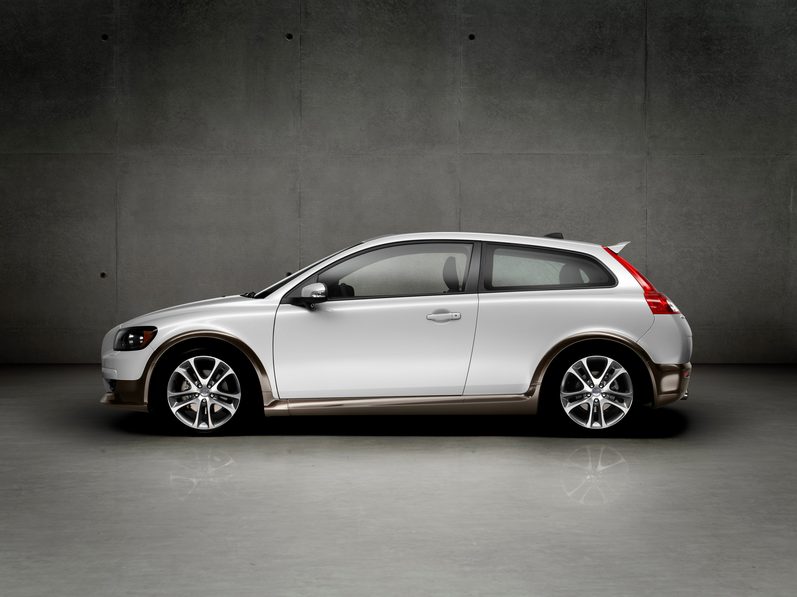
Hogeschool Rotterdam - HBO Automotive Engineering - EASADE01K
MerkenAnalyse
Automotive Design · Opdracht 1 · Analyseren
NIO
Volvo
Rimac

Automotive Design · Opdracht 1 · Analyseren
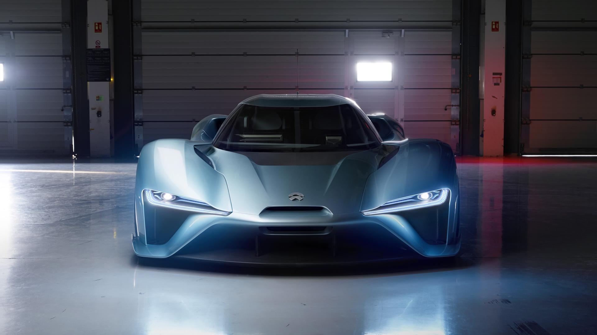
Chinees premium EV-merk · Opgericht 2014 · Shanghai
"Blue Sky Coming"
NIO richt zich op welvarende, technologisch onderlegde consumenten, voornamelijk in China, maar ook in Europa (Noorwegen, Duitsland en Nederland).
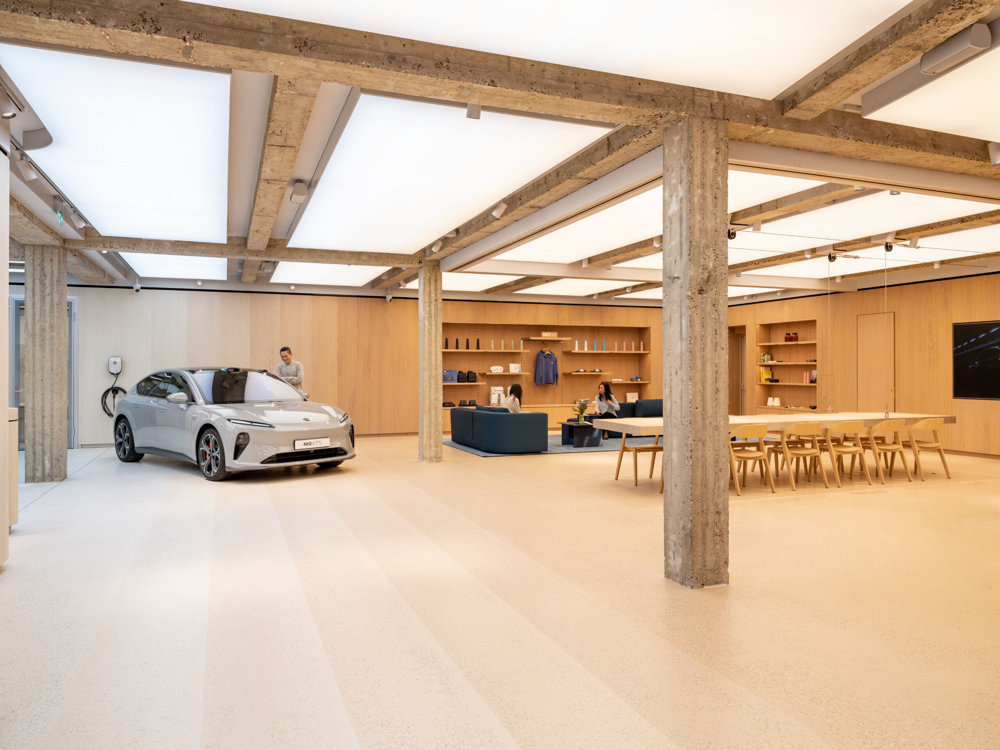
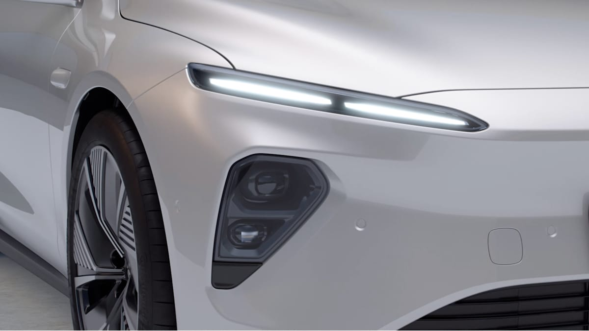
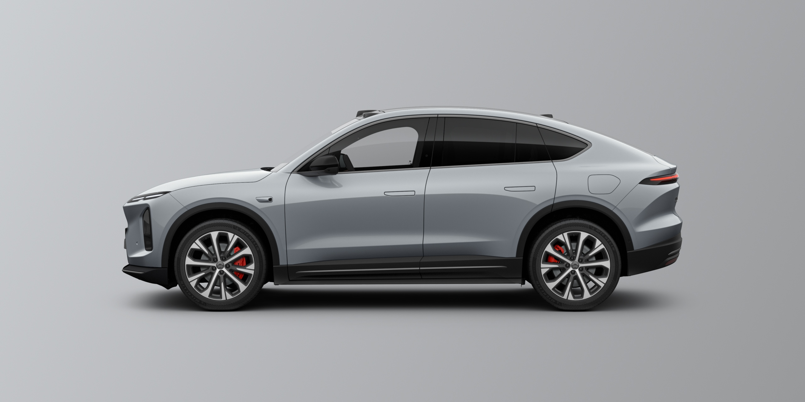

Horizontale LED-strips voor- en achterin maken de auto optisch breder. Kenmerkend voor alle modellen.
Contrasterende daklijn creëert een zwevend dak-effect bij de coupé-SUV modellen (EC6, EC7).
Fysieke AI-bol op dashboard. Modelnamen als code: ET = sedan, ES = SUV, EC = coupé-SUV.
Vier elektromotoren (één per wiel) met elk een eigen versnellingsbak. Samen 1.360 pk of 1 Megawatt, brak in 2016 het Nürburgring-record voor elektrische auto's (6:45.9).
LiDAR-gebaseerd platform met 33 sensoren voor volledig autonoom rijden. Vergelijkbaar met Tesla FSD, maar met extra hardware.
In minder dan 5 minuten wordt de lege batterij automatisch vervangen in een Power Swap Station. Meer dan 2.300 locaties wereldwijd, geen enkel ander merk biedt dit aan op deze schaal.
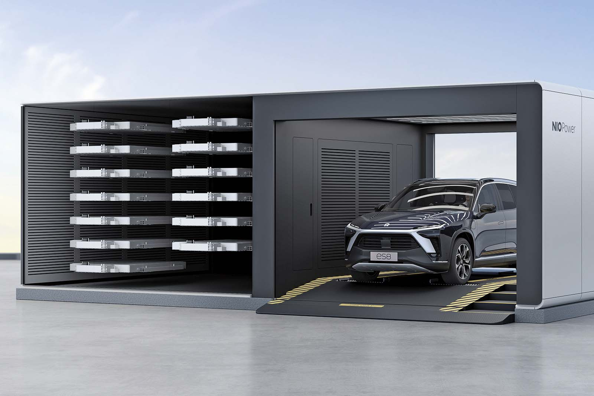
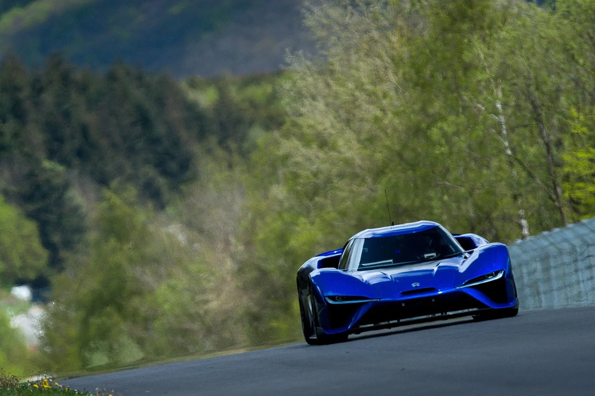
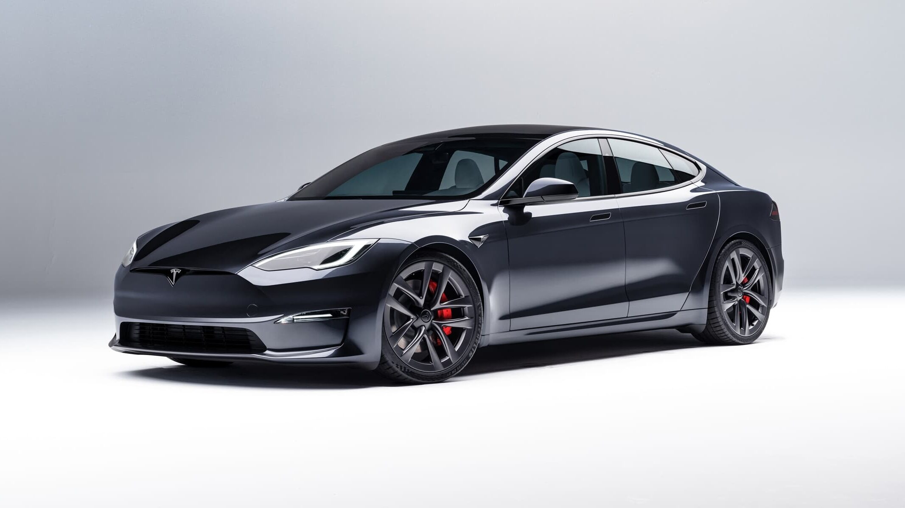
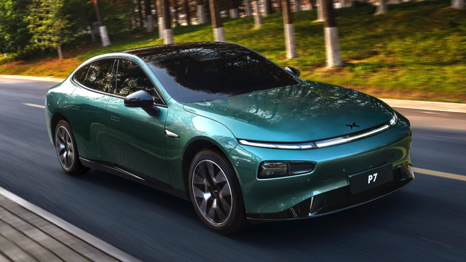
Ja, dankzij een unieke combinatie van technologie, community en schaalbaarheid.
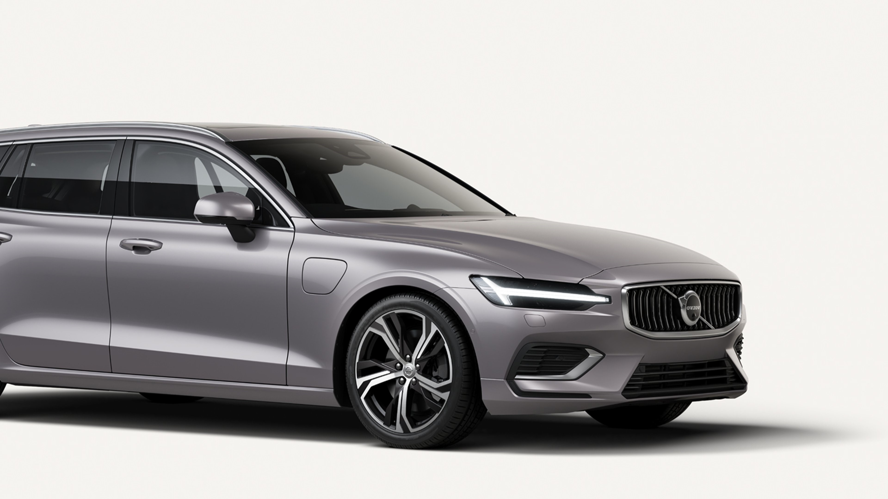
Zweeds premium automerk · Opgericht 1927 · Göteborg
"For Life"
Volvo Cars is een Zweeds automerk opgericht in 1927 in Göteborg, tegenwoordig eigendom van de Chinese Geely Group (sinds 2010), maar volledig zelfstandig opererend met een Scandinavische identiteit.
Volvo richt zich op een brede premiumklasse: gezinnen die veiligheid prioriteit geven, milieubewuste consumenten en professionals (30–55 jaar) die comfort en design combineren.
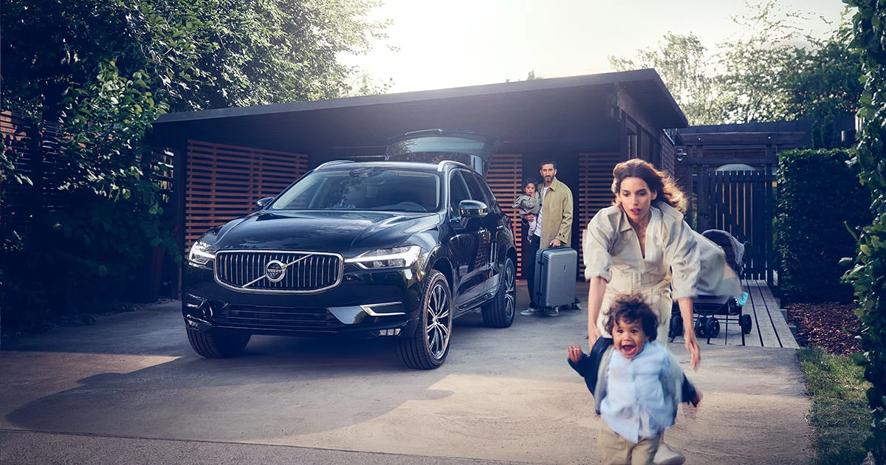


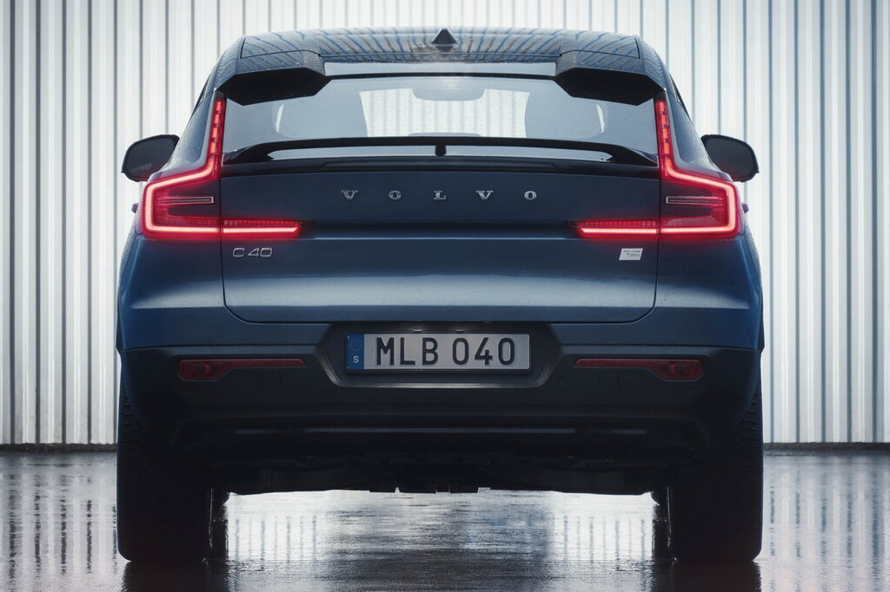
'Thor's Hammer' LED-dagrijverlichting voorin, herkenbaar kenmerk op alle moderne Volvo's.
Zwevend centraal touchscreen, rustgevend kleurenpalet en gebruik van Zweedse wol, hout en gerecycled leer.
Subtiele Zweedse designelementen en horizontale achterlichtband over volledige breedte van de auto.
Uitgevonden door Nils Bohlin bij Volvo, gratis beschikbaar gesteld aan de industrie. Schatting: meer dan 1 miljoen levens gered.
Automatisch noodremsysteem geïntroduceerd in 2008, een van de eerste ter wereld, nu standaard op alle modellen.
De EX90 detecteert vermoeidheid, afleiding of dronkenschap van de bestuurder via real-time sensortechnologie.
Scalable Product Architecture voor SUV's; CMA voor compacte modellen — beide ondersteunen ICE, hybride én volledig elektrisch.
Bijna alle Volvo's leverbaar als PHEV. In Q3 2024 bestond 48% van de Europese verkoop uit geëlektrificeerde modellen.
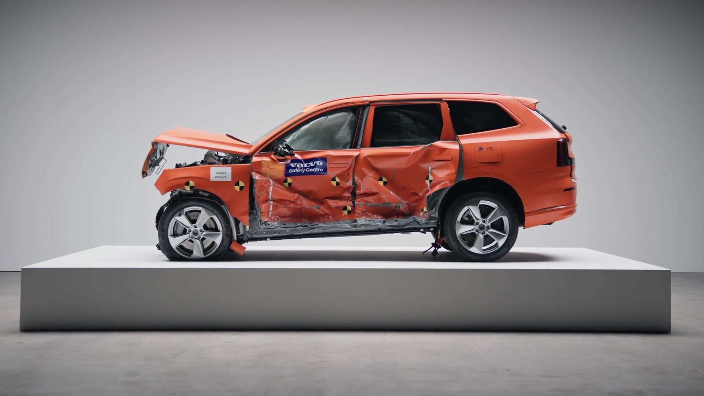
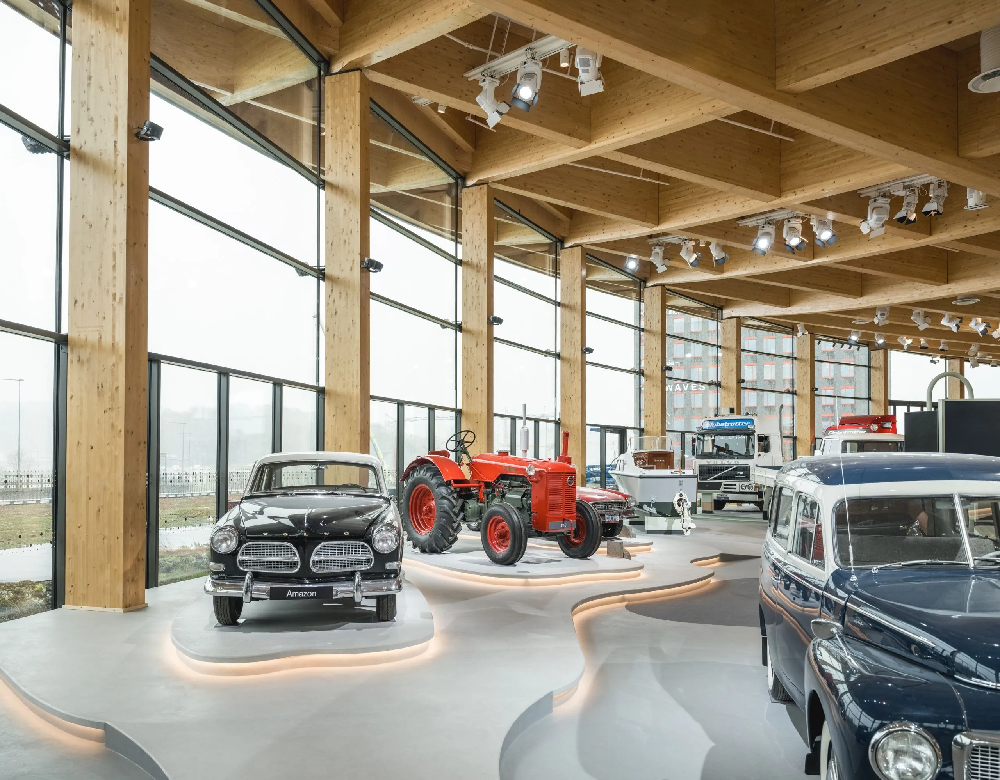
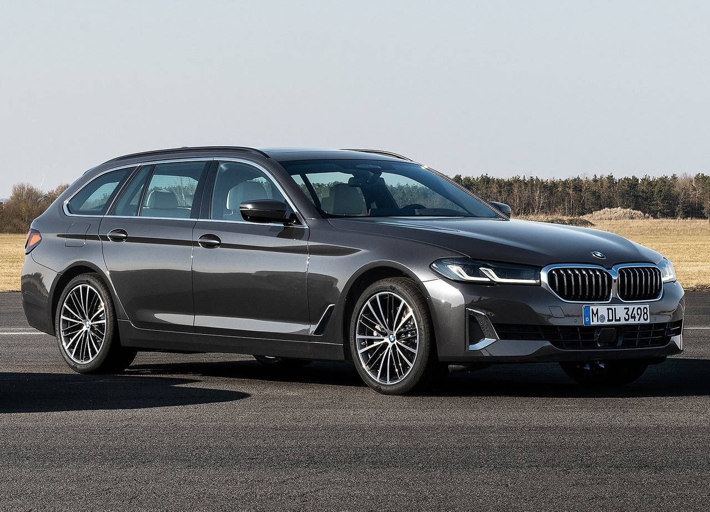

Ja, Volvo is relevanter dan ooit met een unieke positie die geen ander merk zomaar overneemt.
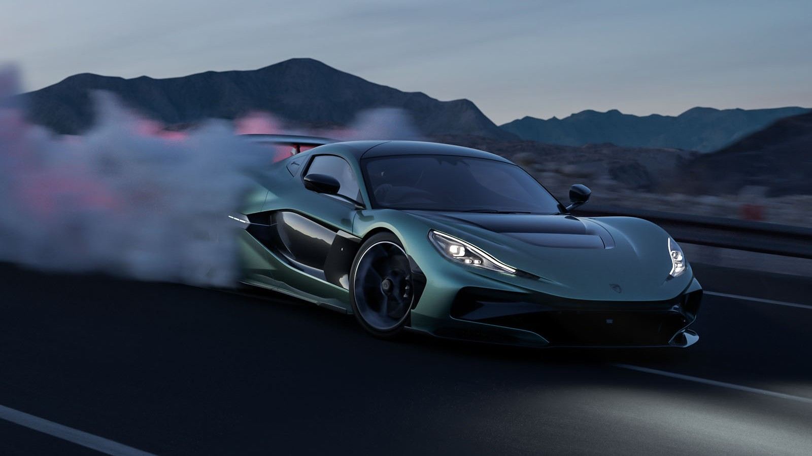
Kroatische EV-hypercar fabrikant · Opgericht 2009 · Zagreb
Van garage naar Bugatti Rimac
Rimac richt zich op een extreem niche doelgroep: rijke verzamelaars van hypercars (netto vermogen >€10 miljoen), technisch onderlegde liefhebbers en investeerders in exclusiviteit. De productie is bewust beperkt, 150 Nevera's en 40 Nevera R's ooit.
De grotere businesskant is Rimac Technology als B2B-leverancier van EV-systemen aan Porsche, Hyundai, Koenigsegg en Aston Martin.


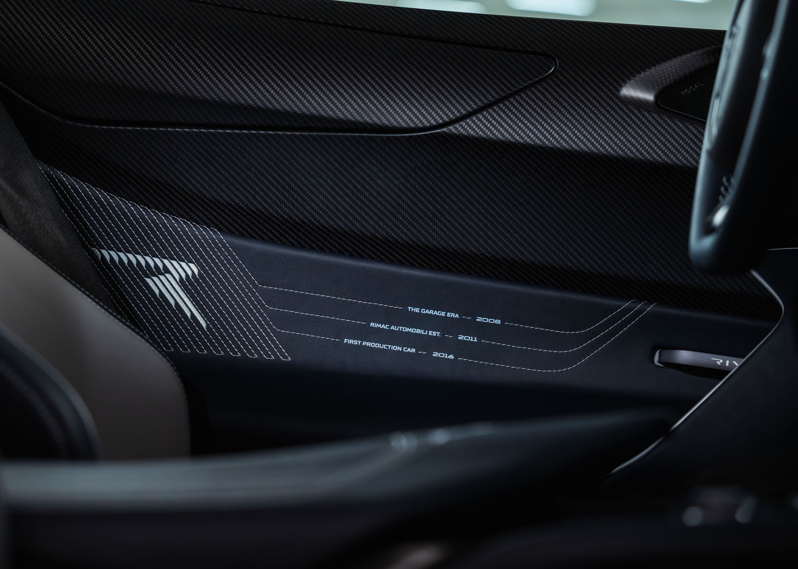
Elke carrosserie-lijn heeft een aerodynamisch doel. Carbon fiber monocoque is zichtbaar aanwezig als visueel kenmerk.
Butterfly doors openen omhoog. Brede, lage stance met 21-inch achterwielen voor voorwaarts drijvende houding.
Handgestikt leer, asymmetrische stoelindeling. Nevera R heeft 2 mm breed daksierstreepje met circuit-board motief.
Eén motor per wiel met eigen single-speed versnellingsbak. All-Wheel Torque Vectoring voor maximale rijdynamica in alle situaties.
Vier permanente magneet synchronmotoren, meer dan vrijwel elke andere straatauto ter wereld.
De Nevera zette 23 prestatierecords op één dag (mei 2023), waaronder 0-100 km/h in 1.82s.
Bereikte 412 km/h op het Papenburg testcircuit, een van de snelste elektrische productieauto's ooit.
Levert complete EV-powertrains en batterijpakketten aan Porsche, Hyundai, Koenigsegg en Pininfarina.
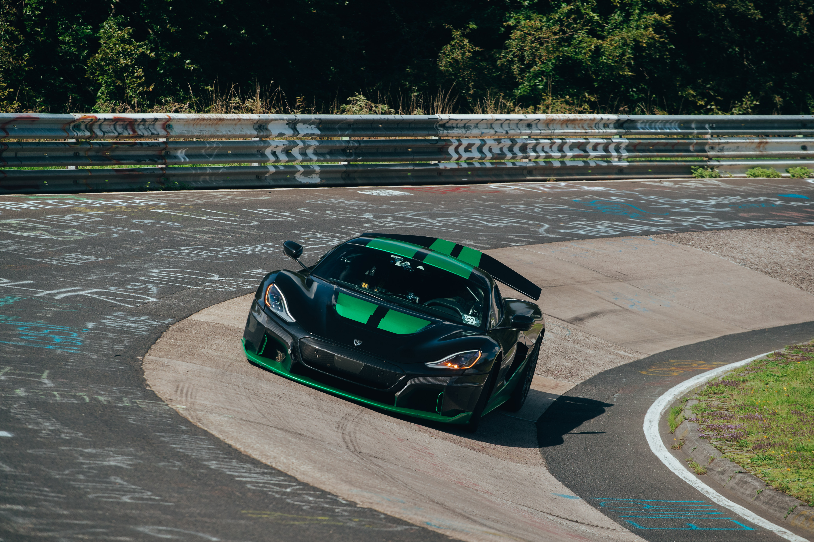
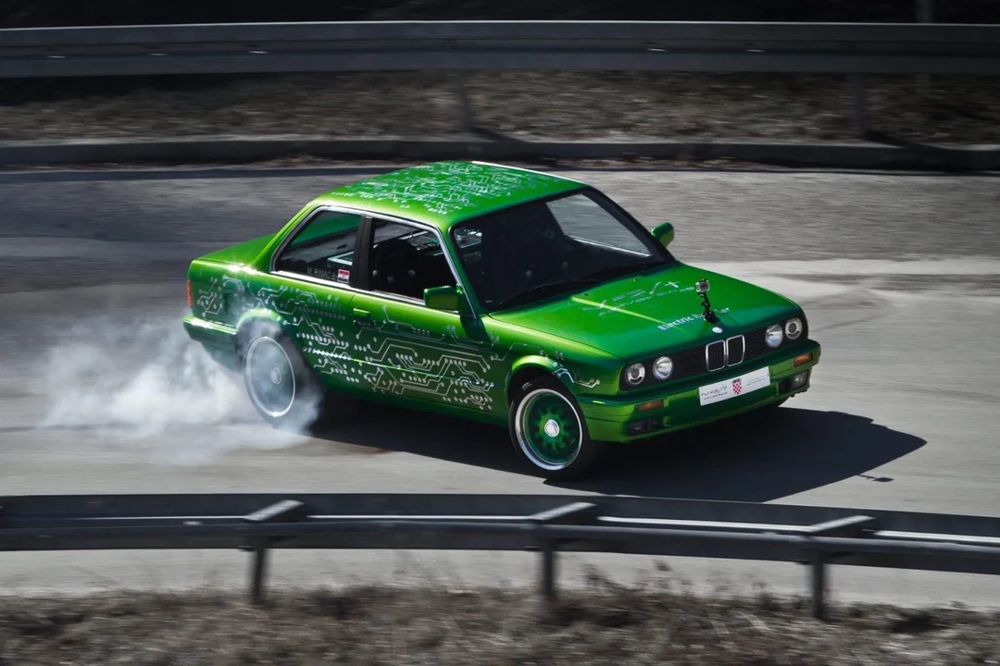
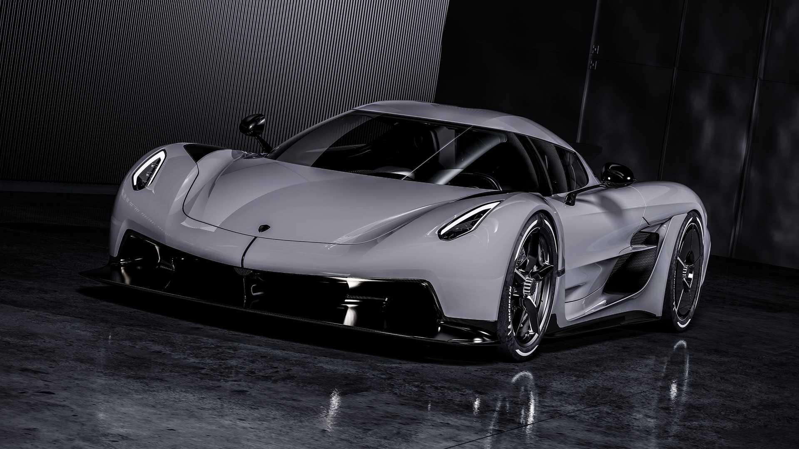
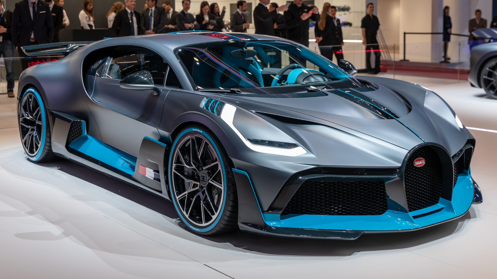
Ja, Rimac is eigenlijk twee bedrijven in één, beide met een sterke toekomst.